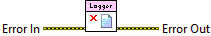

Error In describes error conditions that occur before this node runs. This input provides standard error in functionality.
Turns off, or disables, the internal, default log file.

|
|
Error In describes error conditions that occur before this node runs. This input provides standard error in functionality. |
|
|
Error Out contains error information. This output provides standard error out functionality. |